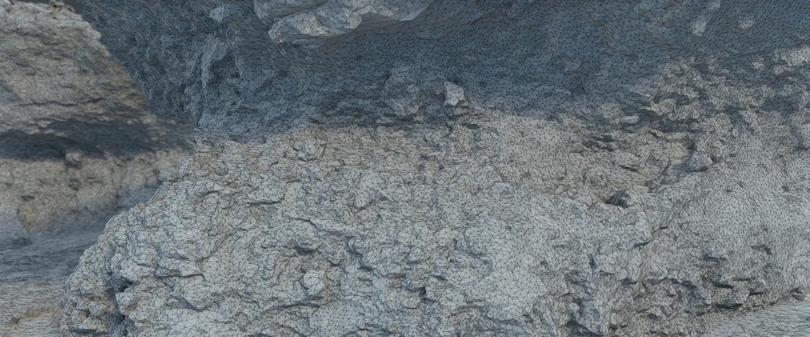
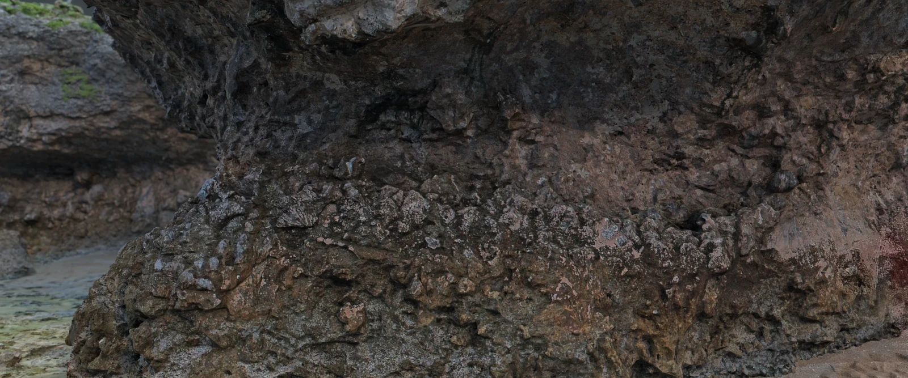

Look beneath the photograph.
Te Rotonui, Mitiaro · See how photographs become a 3D surface.


Texture3D meshGeometry lets us trace features across the outcrop. Samples and ages help establish what those features record.
What this model can tell us
These are reconstructions of today’s rock surface, not past sea level. Interpreting elevations requires a validated survey datum, geological ages, and an account of land motion.
Step back to the whole coast.
Follow the cliff and reef flat around the model.
30-second silent overview · Press play to rotate.
Video unavailable. Open the original site viewer.
Model views: Cook Islands 2026 / HiSEAS field resources.